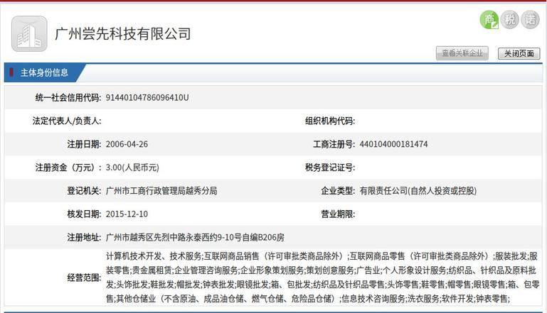
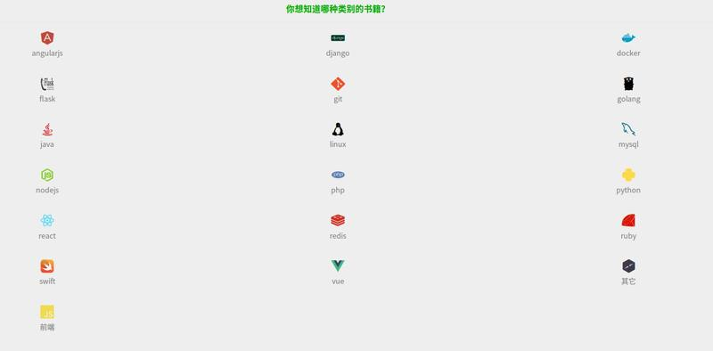

近期跟1个留美博士开展数据感知方面的工作,1个多月来实行996工作制度,虽然工作比较辛苦,但是还是有所收获的。美中不足的是,前公司chuanbay拖欠了工资了2个月了,而公司负责人却相互推诿责任,手机不是关机就是无法接听,极其没有诚意。

虽然,我们程序猿拿它没办法,每次都说等他回来再说,而自己却跑去韩国汉城旅游,但是在这个世上一物降一物,不是不报是时辰未到。
当然,我们没有必要让这个伤心的事情影响我们对技术的热爱。
下面的这个页面,是chuanbay时候那个哥们整理的1个网站,个人感觉内容还可以,基本涵盖Python的Web开发方面,详情可以点击推荐给Python研发的书籍。
其页面如下所示:

由于其精力有限,不可能完全找到符合你需求的一些书籍。如果有好的建议,可以联系它本人。其中,在该公司项目中用到比较多的技术是:
- Flask
- Linux
- Docker
- git
- vuejs
- mysql
- django
在该页面中,会根据你的等级推荐一些书籍给你,主要有:
- 入门
- 进阶
- 高级
- 实战
- 其他
当前基本上入门的书籍已经整理完成。
之前,也给他提了一些建议,比如点击之后出现一些选择题,然后根据回答的答案,智能的推荐一些书籍。当然,这个过程涉及到机器学习的内容,这里就不详细介绍了。
当然,你看到的每1本书都是他熬夜进行更新后得到的,毕竟他也怕误人子弟。